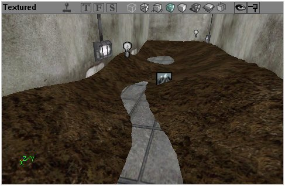
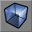
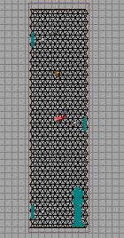
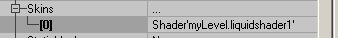
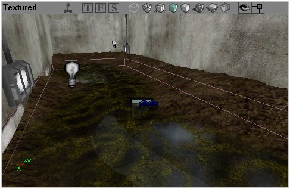

Fluid Surfaces
This tutorial will introduce you to the basics of FluidSurfaces. As you can see in the first screen shot, I've made a room with some dirt (see subtract a space), and I'd like to add a thin layer of water.

we'll add water there |
FYI: Since I (Freon) am french, the boolean values in the properties boxes are in french too. Vrai is for true and Faux is for false. Enjoy now 
Adding a water volume
Add a volume: Resize your red builder brush to fit the size of the room you want to fill with water (or even a little more). Use the height to determine how deep the water will be. Place your red brush where the water should be and right click on the volume button  and choose WaterVolume. That's all you need for now.
Adding the surface
The water volume is invisible. You could use a simple sheet to make the surface visible, but it would be a little static and won't slosh around. Add an Actor >> Info >> FluidSurfaceInfo in the middle of your room, at the surface height.
![[fluidsurfaces-2]](images/fluidsurfaces-2.jpeg) the water volume is placed at mid-height of the terrain |
- FluidSurfaceInfo → FluidXSize and FluidYSize to fit the room size
- You can also use FluidGridSpacing to determine how big the grid should be.

top view |
See creating a material for info on how to create a shader material for your FluidSurface.
9. Open the FluidSurfaceInfo properties, click on Display → Skins and click on the Add button. Then pick the shader you want applied to the surface with the textures browser.

adding a skin |
You can adjust the values in the oscillator and the scalers especially the last one to fit the shores.

final shot |
Don't forget setting bUnlit on False in the Display properties.
Comments
Mychaeel: A very nice tutorial. Feel free to use our image uploader to put the images on our Unreal Wiki webspace; but before you do that, give them less generic file names please (something along the lines of "fluidsurfaces-1.jpg" to "fluidsurfaces-9.jpg" would do fine instead of "tut1.jpg" to "tut9.jpg").
Freon: Tarquin told me i could upload them but that you were a little short on web space  I'll let the zipfile on my homepage
I'll let the zipfile on my homepage
Tarquin: We're not short on space; what I meant is that I'm trying to cut down on duplication: for example, many tutorials have a step saying "set the following surface properties" – so we only need one screenshot of the surface props window for the whole wiki. The next phase is to have pages for Basic Procedure which tute writers can just link to – take a look at that page.
Tarquin: How about we split off the part on creating a material into Creating a material, since we might want to link to that specifically?
\/\/0RF: Someone please follow Tarquin's suggestion, as this tut alone clearly shows that there are a lot of different material types, with numerous differences in how they are set up. Working with materials can be a powerful tool to bring a lot of eye candy to regular textures without taxing the engine too hard, if someone could provide clear instructions on how they are built.
MadNad I wrote this tut on fluid surface that tells you how to get reflections and opacity in your water. Don't forget to add your WaterVolume to make it act like water when you enter it. http://madnad.com/UT2004/WaterTutorial/
Bob_The_Beheader: Done! I hope the link to the creating a material is noticable enough.